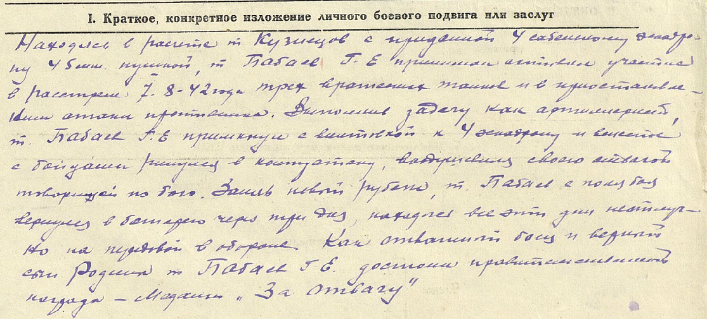
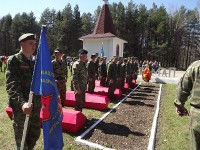

|
Нина Германовна сообщает, что в ходе поисковых работ на территории Сычевского р-на Смоленской области подняты останки нашего земляка БАБАЕВА Григория Емельяновича, 1915 г.р., уроженца дер. Бибирево, Бибиревского сельсовета Октябрьского (Западнодвинского) р-на Калининской области. Жена Бабаева Е.И.
Был призван в 1941 г. Октябрьским РВК. Младший сержант, замковой расчета 45 мм орудия, 16 гв. кав. полк, 4 гв. кав. дивизия. Погиб в бою 30 ноября 1942 г.
Имя сержанта было установлено по номеру найденной при нем медали «За Отвагу». Награжден приказом Командующего Западным фронтом № 01175 от 30.10.42 г.
Из наградного листа:


Останки воина захоронены 7 мая 2013 г. на «Поле Памяти» в г. Сычевка Смоленской области.
Сычевка. Поле Памяти. 7 мая 2013 г.
Просим всех, кто знает родственников Григория Емельяновича, позвонить нам по телефону: 8-(4822)-35-70-18; 35-48-93 или отправить сообщение на наш адрес: poisk@rtkom.ru
|